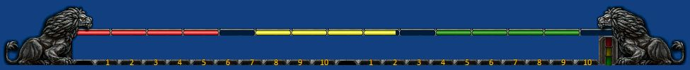
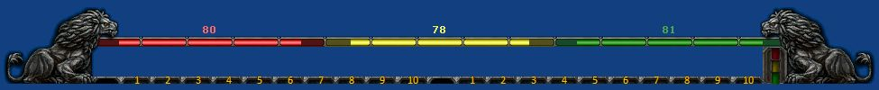

These are the WOW style Summary windows.
They are normally placed stretched out along the bottom of your screen. The player health, power, and endurance status is displayed using colored bars along the top of the window. Space is provided in the middle of the image to "dock" the quick bars. A built in performance meter is included along the right side of the window. The meter shows performance (packet loss) status on the top, lag (ping time) status in the middle, and frame rate (frames per second) status on the bottom. The perofrmance indicators change from green to yellow and then red as the lag increases and the performance/frame rate drops.
This style has room for three quick bars to be docked inside the window.
This style has room for two quick bars to be docked inside the window.

This style has room for two quick bars to be docked inside the window.
Notice that with this style, the player health, power, and endurance status bars will shrink or expand from the middle as the levels change. In addition, the current value is shown above each bar.

Note: To move the window click and drag the button that appears when you hover over the area at the bottom of the left lions front feet.